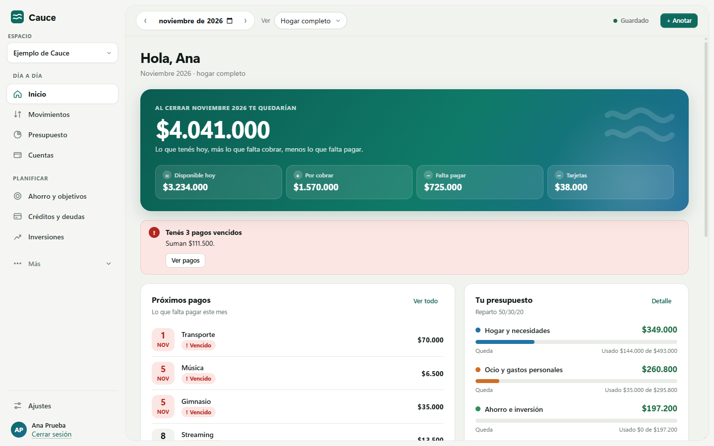
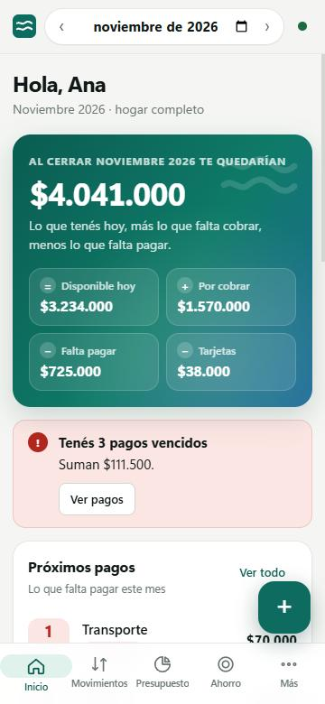

Qué hace Cauce
Presupuesto del mes
Reparte tus ingresos entre hogar, ocio y ahorro, y te muestra cuánto te queda hoy y al cerrar el mes.
Deudas y cuotas
Calendario real de préstamos, tarjetas y compras en cuotas, con un plan para cancelarlas antes.
Ahorro e inversiones
Fondo de emergencia, objetivos de ahorro y seguimiento de tus inversiones con cotizaciones públicas.
En pareja o en familia
Podés compartir un espacio con otras personas; los cambios se combinan y se sincronizan solos.
Tus datos son tuyos
Cauce no tiene servidores propios ni cuentas de usuario aparte. Ingresás con tu cuenta de Google y tus datos financieros se guardan en tu propio Google Drive, en archivos que crea la app, y en una copia local en tu dispositivo para que funcione sin internet.
Cauce solo puede ver los archivos de Drive que creó o que vos elegís abrir; no accede al resto de tu Drive. No muestra publicidad, no usa analíticas y no vende ni comparte tus datos. Los detalles están en la política de privacidad.
Uso de Google
Cauce usa el ingreso con Google para identificarte (nombre, correo y foto de perfil) y el permiso de Google Drive limitado a archivos de la app (drive.file) para guardar y sincronizar tus espacios. Podés revocar el acceso cuando quieras desde myaccount.google.com/permissions.
English: Cauce is a free personal and household finance app for Windows and Android. You sign in with Google and your financial data is stored in your own Google Drive (only files the app creates or that you open with it, via the drive.file scope) and in a local copy on your device. Cauce has no servers of its own, shows no ads, uses no analytics and never sells or shares your data. See the Privacy Policy and Terms of Service.